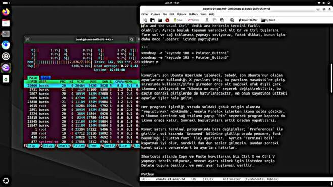

Ubuntu 24, Acer Swift 3
Yeni dizüstü yeni Ubuntu. Swift 3 kuvvetli makina. Kurulum icin en son Ubuntu versiyonu iso olarak alttan indirilir,
https://ubuntu.com/download/alternative-downloads
Dosya 6 GB civarı. Sonra mevcut (eski) Ubuntu üzerinde bu iso Startup Disk Creator programı ile bir usb flash diske yazılır. Artık üzerinden yükleme (boot) edilebilir bir diskimiz var.
Şimdi Acer'da açılış sırasında F2 basılı tutularak BIOS'a girilir
(sifre sorarsa boş ya da 0000 denenebilir). Main menüden F12 Boot
Menü seçeneği Enable yapılır. Kaydedilip tekrar başlatılır, bu
sırada ardı ardına F12 tuşuna basılmalı. Bu bizi yeni bir ekrana
götürür, o ekranda sadece bir yükleme seçeneği var, ama flask diski
USB porta sokar sokmaz Ubuntu seçeneği de görülecek. Bunu seçin ve
kurulumu yapın.
Makina açılınca sudo apt install ile kurulacak programlar,
gnome-tweaks python3-virtualenv git emacs texlive-latex-base net-tools
mpv emacs chromium-browser texlive-base djvulibre-bin imagemagick recoll
texlive-fonts-recommended texlive-fonts-extra python3-pandoc gimp xkbset
nodejs ccrypt htop vlc gfortran liblapack-dev libopenblas-dev cmake
Biz CAPS tuşunu hep CTRL yaparız, bu versiyonda bunu Gnome Tweaks ile
yapmak kolay, gnome-tweaks işletelim, "Keyboard | Additional Layout
Options" seçelim, orada "Caps Lock Behavior" var, değişimi oradan
yaparız. Biz ayrıca "Alt Win behavior" seçeneğinde "Ctrl is mapped to
Win and the usual Ctrl" dedik ama herkesin tercihi farklı
olabilir. Ayrıca boşluk tuşunun yanındaki Alt Gr ve Ctrl tuşlarını
fare sol ve sağ tıklaması yapmayı seviyoruz, fakat dikkat, bunun için
daha önce .bashrc içinde yaptığımız
xmodmap -e "keycode 108 = Pointer_Button1"
xmodmap -e "keycode 105 = Pointer_Button3"
xkbset m
komutları son Ubuntu üzerinde işlemedi. Sebebi son Ubuntu'nun olağan ayarlarının kullandığı X yazılımı imiş, bu yazılımı masaüstü'ne giriş sırasında kullanıcı/şifre girmeden önce alt sağdaki ufak dişli çark ikonuna tıklayarak ve "Ubuntu on xorg" seçerek değiştirebiliriz, bu seçim sonraki girişlerde de hatırlanacaktır, ve onun sayesinde üstteki ayarlar işler hale gelir.
Yine aynı Tweaks programı üzerinden arka planı düz tek renkli resim yapabiliriz, Appearance kısmından Background alanına bakalım, orada Default Image seçeneği var, orada siyah renkli bir JPG dosyası verebiliriz, Web'de bu tür pek çok görüntü dosyası var.
Her programı işlediği sırada soldaki çabuk erişim alanına "yapıştırmak" mümkündür, mesela Firefox işlerken ikonu solda gözükür, o ikonun üzerinde sağ tıklama yapıp "Pin" seçersek program kapansa da ikonu orada kalır. Sonraki başlatımları artık oradan yapabiliriz.
Komut satırı Terminal programında bazı değişimler; Preferences ile
girilir, sol kısımda Unnamed bölümüne gidilip orada pencere, font
büyüklüğü (Custom font ile) ayarlanır. Ayrıca "Terminal bell"
kapatmak iyi olur, sürekli dan dun sesler gelmesin. Bundan sonraki
komut satırı pencereleri bu ayarları hatırlar.
Shortcuts altında Copy ve Paste komutlarını biz Ctrl X ve Ctrl V yapmayı tercih ediyoruz, mevcut ayarı silmek için listeden seçip Delete tuşuna basılır, ve yeni ayar tuşlaması verilir.
Python
Sistem için bile olsa sık kullanılan Python paketleri bir sanal ortamda kurmak iyidir,
virtualenv -p /usr/bin/python3 env3
Artık env3 dizini altında bir Python ortamı var. Aktive etmek için
source env3/bin/activate.
Burada pip install ile
matplotlib pytest-shutil jupyter-notebook markdown numpy-stl
ipython zmq importlib numpy Shutil pandas feedparser Cython
pkgconfig

Pymacs
Emacs içinde Python işletenler için faydalı bir yazılım. Kurulum
önceden olduğu gibi, [2]'den repo alınır, ardından make ve python
setup.py build ve install. Fakat Ubuntu'nun olağan Python
yorumlayıcısı 3.12 üzerinde bazı farklılıklar var, alttaki değişimleri
yaparsak Pymacs [2] tekrar çalışır hale gelir, değişimler git diff
ile üretildi,
index 08e3d4d..10393bb 100755
--- a/Pymacs.py.in
+++ b/Pymacs.py.in
@@ -41,10 +41,10 @@ if PYTHON3:
import collections
def callable(value):
- return isinstance(value, collections.Callable)
+ return isinstance(value, collections.abc.Callable)
basestring = str
- from imp import reload
+ from importlib import reload
else:
__metaclass__ = type
diff --git a/setup.py b/setup.py
index 36fca2e..2bc68cc 100644
--- a/setup.py
+++ b/setup.py
@@ -70,7 +70,7 @@ def cfg_to_args(path='setup.cfg'):
config = RawConfigParser()
f = codecs.open(path, encoding='utf-8')
try:
- config.readfp(f)
+ config.read_file(f)
finally:
f.close()
Tıklama ile Masaüstünü Göster (Show Desktop)
Bazen pencereler çok birikir, tek bir tuşa basıp hepsini minimize etmek isteyebiliriz. Önce
sudo apt install wmctrl
Bu program komutu satırından herşeyi wmctrln -k on ile minimize edebilir.
Şimdi bir ikon yaratalım,
gedit ~/.local/share/applications/show-desktop.desktop
Dosya icine
[Desktop Entry]
Type=Application
Name=Show Desktop
Icon=desktop
Exec=wmctrl -k on
Bir uygulama yaratmış olduk, artık uygulamalar içinde "Show Desktop" kelimesini ararsak ikonumuzu bulabiliriz, ve bulunca sağ tıklama ve "Pin to Dash" ile programı sol taraftaki erişim bölgesine yapıştırabiliriz.
Internet Servisi
Bu servisi bazen tekrar başlatmak gerekebilir, yeni komut
sudo systemctl restart NetworkManager.service
Matplotlib
Python üzerinde kurulduktan sonra bu paket için $HOME/.config/matplotlib/matplotlibrc
dosyasında backend : Agg ayarı yapmak iyi olur.
Kaynaklar
[1] https://www.youtube.com/watch?v=eMHr9jsbJG4
[2] https://github.com/pinard/Pymacs
Yukarı